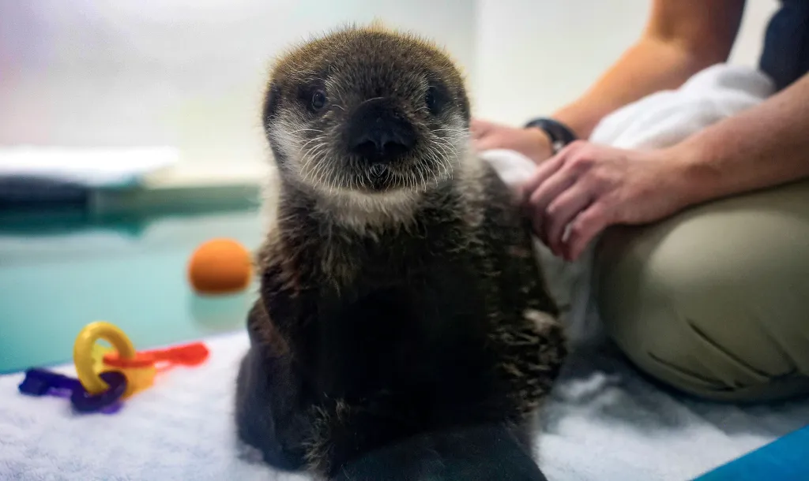
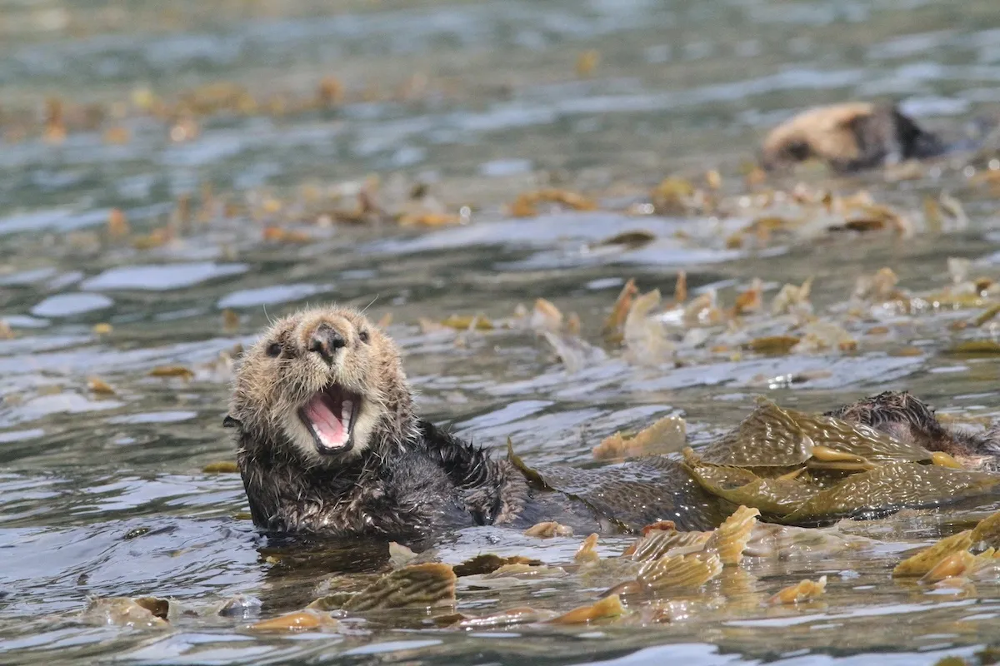

Introduction
Sea otters are cool marine animals! They are fluffy and cute creatures with a big appetite!
About Otters
Sea otters primarily live in kelp forests. They help the forest thrive by consuming urchins! Without predators, urchins deplete the forest and create an "urchin baren". Otters are important for maintaining the health of their environments! The sea otter diet also consists of crabs, snails, clams, abalone, and other invertibrates. Otters can store food in their natural "pockets" - loose skin under their forearm!
Sea otters live in different parts across the world. There are groups along California's central coast, "from San Mateo County in the north to near Santa Barbara in the south" (Sea Otter by Monterey Bay Aquarium).
Quiz Questions
In what environment do sea otters live?
Do you like sea otters?